Understanding the Model
Overview: Introduces the model from a behavioral and structural perspective. Explains how code is generated and shows the basics of configuring the model.
Time: 1/2 hour
Goals
- Understand the functional behavior of the model
- Understand how the model is validated
- Get familiar with model checking tools
- Get familiar with configuration options that affect code generation
- Learn how to generate code from a model
Contents
- Understanding the Model's Functional Design
- Viewing the Top-Level Model
- Viewing Subsystems
- Viewing the Configuration Options for Code Generation
- Saving the Configuration Parameters as a MATLAB Function
- Understanding the Simulation Testing Environment
- Running the Simulation Tests
- Generating Code for the Model
- Examining the Generated Code
- Further Study Topics
Understanding the Model's Functional Design
This demo uses a simple but functionally complete model of a throttle controller. The model features redundancy, which is common for safety-critical drive-by-wire applications. The model highlights a standard model structure and a set of basic blocks in algorithm design.
In the current configuration, the model generates code. However, the code is not configured for a production target system. This demo guides you through the steps necessary to change the target configuration and shows how the format of the generated code changes with the completion of each task.
Viewing the Top-Level Model
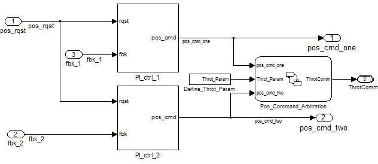
The top-level model consists of:
- Four subsystems (PI_ctrl_1, PI_ctrl_2, Define_Throt_Param, and Pos_Command_Arbitration)
- Top-level inputs (pos_rqst, fbk_1, and fbk_2)
- Top-level outputs (pos_cmd_one, pos_cmd_two, and ThrotComm)
- Signal routing
- No transformative blocks (blocks that change the value of a signal, such as Sum and Integrator blocks)
The layout shows a basic model architectural style.
- Separation of calculations from signal routing (lines and buses)
- Partitioning into subsystems
You can apply this style to all types of models.
Viewing Subsystems
Two subsystems represent PI controllers, PI_cntrl_1 and PI_cntrl_2. The subsystems are identical and, at this stage, use identical data. Later, you use the subsystems to learn how Real-Time Workshop® can create reusable functions.
The PI controllers are included in the model from a library, a group of related blocks or models intended for reuse. Libraries provide one of two methods for including and reusing models. The second method, model referencing, is covered later. You cannot edit a block that you add to a model from a library in the context of the model. To edit the block, you must do so in the library. This ensures that instances of the block in different models remain consistent.
Task: Open subsystem PI_cntrl_1.
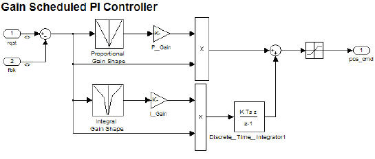
The Stateflow diagram performs basic error checking on the two command signals. If the commanded signals are too far apart, the Stateflow diagram sets the output to a fail_safe position.
Task: Open Pos_Command_Arbitration.
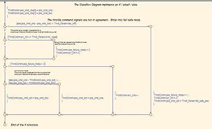
Viewing the Configuration Options for Code Generation
The first step to prepare a model for code generation is to set model configuration parameters. The configuration parameters determine the method Real-Time Workshop uses to generate the code and the resulting format.
Code Generation Objectives
You have the option to manually configure the model configuration parameters. Alternatively, there is a set of predefined objectives that you can use to auto-configure the model configuration parameters.
There are six high-level code generation objectives that you can use to auto-configure the model configuration parameters:
- Execution efficiency
- ROM efficiency
- RAM efficiency
- Traceability
- Safety precaution
- Debugging
Each code generation objective will check the model configuration parameters against the recommended values of the objectives. Each objective also includes a set of Code Generation Advisor checks that you can use to verify that the model configuration parameters are set to create code that meets the objectives.
Some of the code generation objectives are mutually exclusive in terms of the recommended value for configuration parameters and the set of Code Generation Advisor checks. When the objectives are in conflict, the order of the selection determines which objectives are followed. There is a mechanism to solve the conflict to ensure objectives with higher priorities are satisfied before the objectives with lower priorities are satisfied.
In the following example, the priority is Execution efficiency, ROM efficiency, RAM efficiency. To open the dialog box, open the Configuration Parameters dialog box, select the Real-Time Workshop pane, and click Select objectives.
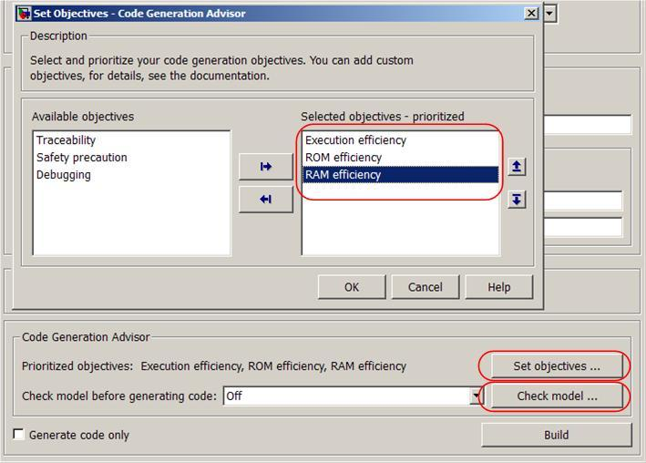
You can choose to run the Code Generation Advisor to check the model based on the specified objectives. To launch the Code Generation Advisor, click Check model on the Real-Time Workshop pane of the Configuration Parameters dialog box.
The list of checks in the Code Generation Advisor is dynamically created based on the objectives that are selected. The first check reviews the current values of the configuration parameters and suggests alternative values based on the objectives. The check provides an automated method for setting the parameters to the recommended values.
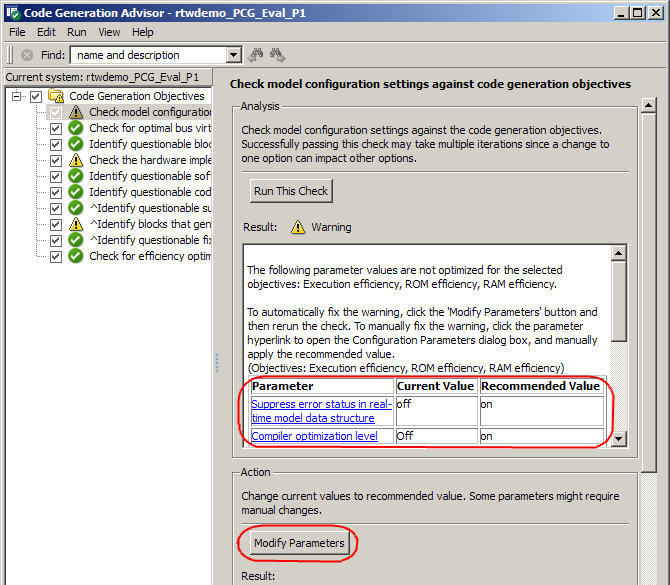
Manual configuration options
In the following sections, we will look at the sections of the models configuration options:
- Solver
- Optimization
- Hardware implementation
- Real-Time Workshop
Solver
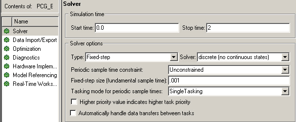
For Real-Time Workshop to generate code for a model, you must configure the model to use a fixed-step solver. The start and stop time do not affect the generated code.
| Option | Required Setting | Effect on Code |
| Start time and Stop time | Any | No effect |
| Type | Fixed-step | Code is not generated unless fixed step |
| Solver | Any | Controls selected integration algorithms |
| Sample time | Must be lowest common multiple of all rates in the system | Sets base rate of the system |
| Tasking mode for periodic sample times | SingleTasking or MultiTasking | MultiTasking generates one entry point function for each rate in the system |
Optimization
Task: Open the Optimization pane.
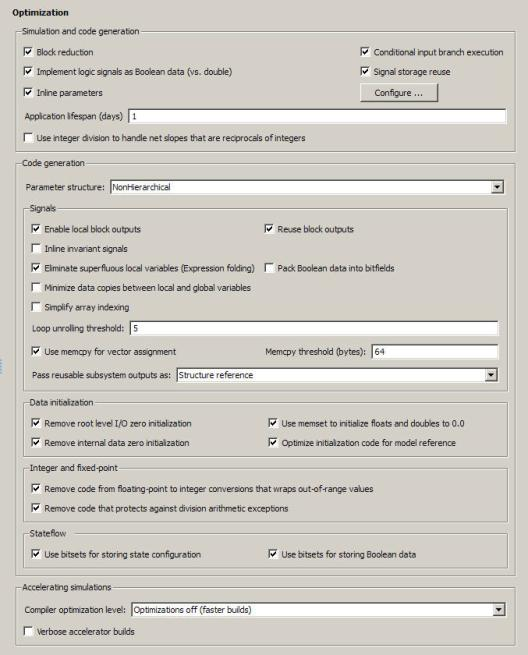
The Optimization pane consists of five subsections.
| Section | Effect |
| Simulation and code generation | Removes unused branches from the code and controls creation of temporary variables |
| Signals | Reduces the number of temporary variables created by collapsing multiple computations into a single assignment and by reusing temporary variables |
| Data initialization | Controls which signals have explicit initialization code |
| Integer and fixed-point | Enables and disables use of overflow and division-by-zero protection code |
| Stateflow | Controls how Stateflow stores bitwise information |
Hardware Implementation
Task: Open the Hardware Implementation pane.
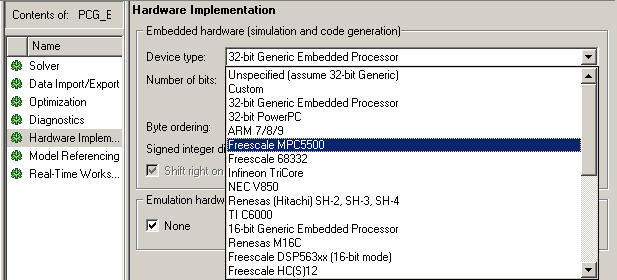
Use hardware implementation parameters to specify the word size and byte ordering of the target hardware. The demo targets a generic 32-bit processor.
Real-Time Workshop
Task: Open the Real-Time Workshop pane.
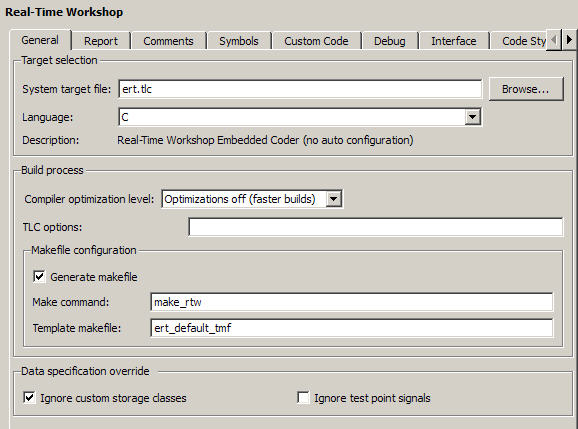
The Real-Time Workshop pane is where you specify the system target file (STF). This demo uses the Real-Time Workshop Embedded Coder™ STF (ert.tlc). You can extend this STF to create a customized configuration. Some of the basic configuration options reachable from the Real-Time Workshop pane include:
- Selection of the code generator target
- ert.tlc - "Base" Real-Time Workshop Embedded Coder
- grt.tlc - "Base" Generic Real-Time Target
- Hardware specific targets
- Selected make file
- Code formatting options
- Line length
- Use of parentheses
- Header file information
- Variable naming conventions
- Inclusion of custom code
- C files
- H files
- Object files
- Directory paths
- Generation of ASAP2 files
Saving the Configuration Parameters as a MATLAB Function
The values of configuration parameters can be saved as a MATLAB function from the command line.
- hCs = getActiveConfigSet('rtwdemo_PCG_Eval_P1');
- hCs.saveAs('ConfiguredData');
The saved MATLAB function is the textual representation of the configuration parameter object. You can use it for archiving, or compare different versions of the files by using traditional diff tools. Its textual nature also makes it easy for visual inspection.
Running the saved MATLAB function will result in setting the configuration parameters of other models.
- hCs2 = ConfiguredData;
- attachConfigSet('myModel', hCs2, true);
- setActiveConfigSet('myModel', hCs2.Name);
Understanding the Simulation Testing Environment
You test the throttle controller model in a separate model called a test harness. A test harness is a model that evaluates the control algorithm. A test harness offers the following advantages:
- Separates test data from the control algorithm
- Separates the plant or feedback model from the control algorithm
- Provides a reusable environment for multiple versions of the control algorithm
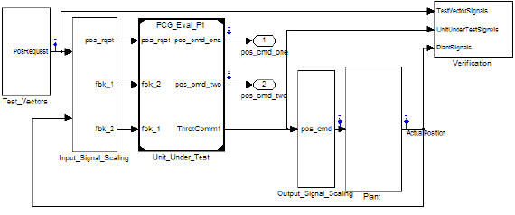
A common simulation testing environment consists of the following parts:
- Unit under test
- Test vector source
- Evaluation and logging
- Plant or feedback system
- Input and output scaling
Task: Highlight the unit under test.
The control algorithm is the unit under test. The control algorithm is referenced in the test harness using a Model Reference block. The Model Reference block provides a second method for reusing components. The referenced model is selected in the Model Reference configuration parameters dialog box.
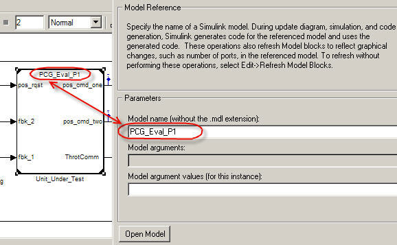
The Model Reference block enables other models to be included (referenced) from the top model as compiled functions. By default, Simulink® compiles the model when the referenced model is changed. Compiled functions have several advantages over libraries.
- Simulation time is faster for large models.
- Compiled functions can be directly simulated.
- The simulation requires less memory. One copy of the compiled model is in memory, even when the model is referenced multiple times.
Task: Highlight the test vector source.
The model uses a Simulink Signal Builder block for the test vector source. The block has data that drives the simulation (pos_rqst) and the expected results used by the Verification subsystem. The model uses only one set of test data. Typically, you would create a test suite that fully exercises the system.
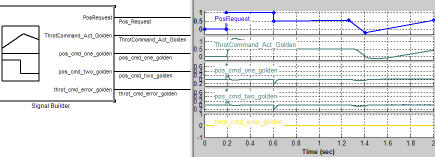
The test harness compares the simulation results against golden data: a set of test results that have been certified by an expert to exhibit the desired behavior for the model. In this model, the V&V Assertion block compares the plant's simulated throttle value position against the golden value provided by the test harness. If the difference between the two signals is greater than 5%, the test fails and the Assertion block stops the simulation.
Alternatively, you can evaluate the simulation data after the simulation completes execution. You can use either MATLAB file scripts or third-party tools to perform the evaluation. Post-execution evaluation provides greater flexibility in the analysis of the data. However, it requires waiting until execution is complete. Combining the two methods can provide a highly flexible and efficient test environment.
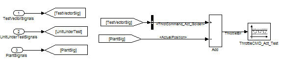
Task: Highlight the plant/feedback system.
The throttle dynamics are modeled with a transfer function that is broken down into its canonical form. Plant models can be created to model any level of fidelity. It is not uncommon to have different plant models used at different stages of testing.
Task: Highlight scaled input and output.
The subsystems that scale input and output perform three primary functions.
- Select signals to route to the unit under test and plant.
- Rescale signals between engineering units and units required by the unit under test.
- Handle rate transitions between the plant and the unit under test.
Running the Simulation Tests
Click Start or the following task link to run the test harness model simulation.
The first time the test harness runs, the referenced model must be compiled. You can monitor the compilation progress in the MATLAB® Command Window.
When the model simulation is complete, Simulink displays the results in a plot window:

The lower right plot shows the difference between the expected (golden) throttle position and the throttle position calculated by the plant. If the difference between the two values had been greater than +/- 0.05, the simulation would have stopped.
Generating Code for the Model
Use one of the following methods or the task link below to generate code for the model:
- Enter Ctrl+B in the model.
- Choose Configuration Parameters > Real-Time Workshop.
- Choose Tools > Real-Time Workshop > Build Model.
Task: Generate code for the model.
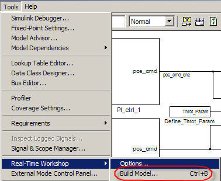
Real-Time Workshop generates several files. The resulting code, while computationally efficient, is not yet organized for integration into the production environment.
Examining the Generated Code
The code generation process results in multiple files that you can view from the Model Explorer. In addition to the standard C and H files a set of HTML files is generated. The HTML files provided active links between the code and the model.
Note: You must generate code before you can view the files.
Task: Opens the HTML Code Browser in the Model Explorer.
In the generated code, note that:
- All of the controller code is contained in one function called ModelName_step and found in the file rtwdemo_PCG_Eval_P1.c.
- The operations of multiple blocks are collapsed into one equation.
- Variables are initialized in the function ModelName_initialize.
- All data is defined using Real-Time Workshop data structures (for example, rtwdemo_PCG_Eval_P1_U.pos_rqst).
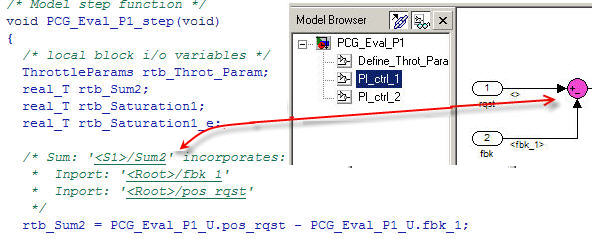
| File | Description |
| rtwdemo_PCG_Eval_P1.c | C file with step and initialization function |
| rtwdemo_PCG_Eval_P1_data.c | C file that assigns values to Real-Time Workshop data structures |
| ert_main.c | Example Main file that includes a simple scheduler |
| rtwdemo_PCG_Eval_P1.h | H file that defines data structures |
| PCG_Eval_p1_private.h | File that defines data used only by the generated code |
| rtwdemo_PCG_Eval_P1_types.h | H file that defines the model data structure |